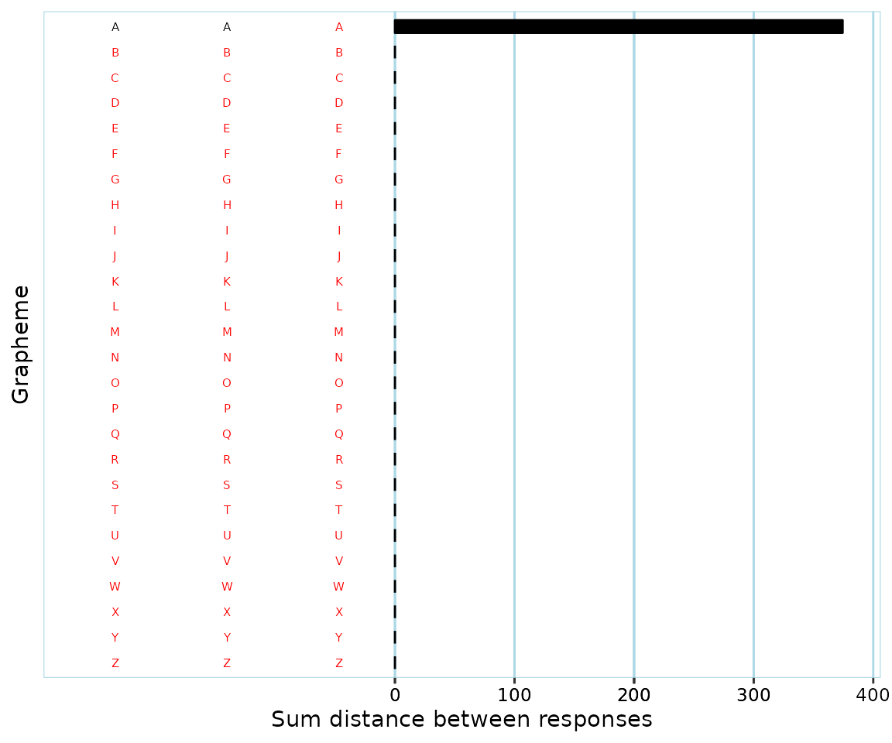
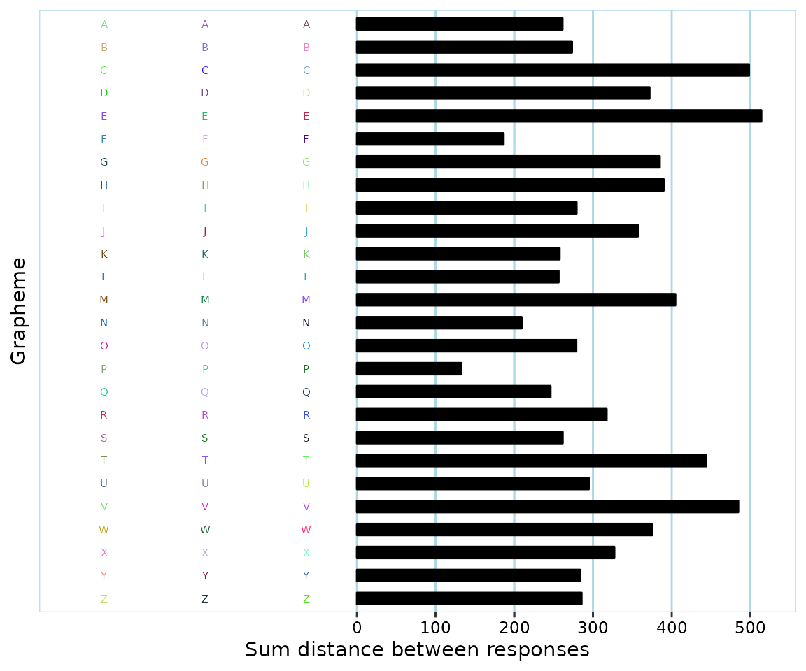
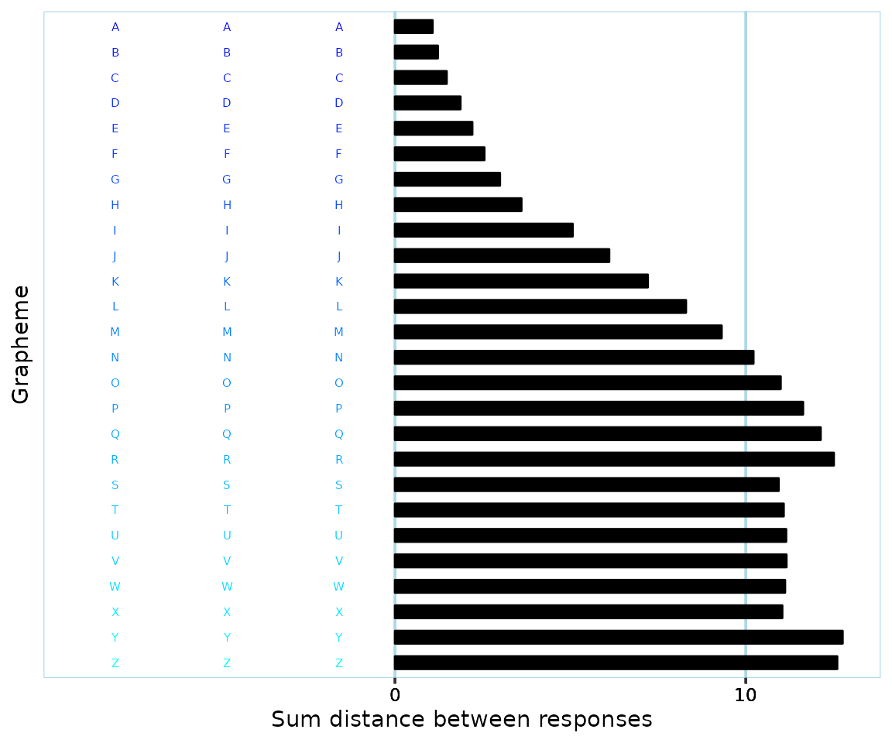
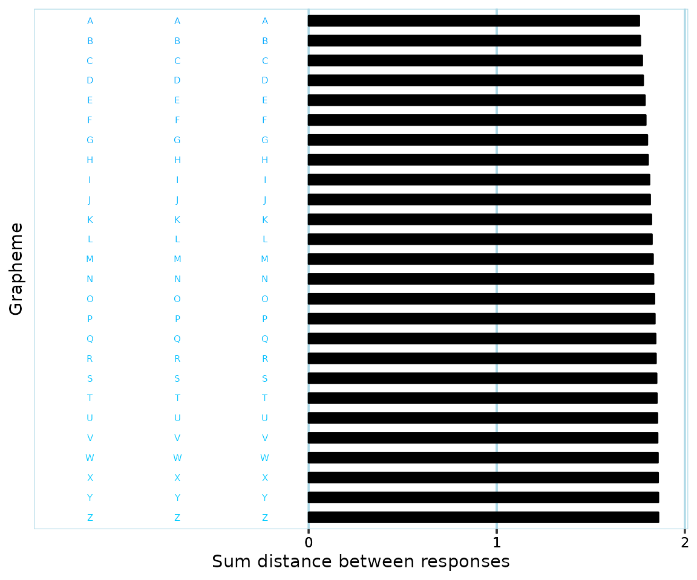

Validating participant color response data
Source:vignettes/articles/validate-data.Rmd
validate-data.RmdWhy validate?
Clearly invalid data
When conducting consistency tests with participants, there might be issues with their response patterns. A clear example of this is if a participant responds with a red color in all but two trials of a consistency test, like this:

This would lead to a very low (i. e. very consistent) consistency score. Should this score, and the data, be considered valid? Most synesthesia researchers would say no, and everyone would definitely say no if the participant themselves don’t report that they associate the color red with the stimuli used in the test.
Another instance of invalid data would be a participant who has provided ‘no color’ (if a ‘no color’/‘null’/‘blank’ response alternative is provided in the test) color responses for all but three graphemes. Even if the participant would have used one color for each grapheme and thus be very consistent, there’s a high risk that the participant simply memorized their previous responses throughout the test since they would have only had three graphemes to keep track of.
Clearly valid data
A clear example of valid response data is if a participant has used very different colors, like this:

Possibly invalid data
Many participants have response patterns that are harder to judge as valid or invalid, such as participants who have:
- Used a red color for just 50% of all trials.
- Used different shades of red and yellow for 90% of all trials.
- Used black, white and blue for all trials.
Should some or all of these be considered to be examples of invalid data? Opinions are bound to differ.
Why validate: summary
The basic issue is that participants might give responses that vary too little in color for the consistency scores to mean anything. It is of course at least theoretically possible that someone would truly only have synesthetic associations with a single color. The consistency test, however, cannot determine whether this is the case, or if the participant for instance just likes the color red and keeps responding with it since that’s the color that comes to mind if they don’t have a stimulus-specific association.
Previously used validation procedures
Different research studies have handled possibly invalid data differently. Some (e.g. Cuskley et al., 2019) have opted for excluding participants which respond with ‘no color’ for more than a certain proportion of all trials. Others (Carmichael et al., 2015; Simner et al., 2006) have opted for (also) excluding participants who respond with ‘the same color’ in too high a proportion of trials. Yet others have excluded participants based on patterns that are more difficult to systematically define, such as a pattern involving selecting “e.g. red for ‘R’, green for ‘G’ and blue for ‘B’” (Carmichael et al., 2015).
Data validation challenges
Excluding participants based on the proportion or number of missing and/or ‘no color’ responses is relatively straight-forward, though there is currently no widely agreed upon threshold.
Excluding participants based on responses that do have an actual color, but where there is too little ‘color variation’, raises difficult questions which are briefly discussed below.
If using a criterion of allowing say only 60% of all responses to be of the ‘same color’, how does one define boundaries of what a color is? For instance, do teal, turquoise and cyan count as different colors? In the image below, where would you say that the ‘blue’ graphemes end, and the ‘blue-green’ graphemes start?

Even if one is able to consistently define color boundaries, what if a participant happens to respond with colors that are right at the ‘border’ of two color ranges? Relating back to the previous example, if you’ve defined where ‘blue’ ends and ‘bluegreen’ starts, a participant might give responses like this:

It might be reasonable to have placed the color border between ‘blue’ and ‘blue-green’ somewhere right around the middle of the above values. If categorizing response colors based on these boundaries, then, the participant would be considered to have 50% ‘blue’, and 50% ‘blue-green’ responses. But the color differences are so small, that a human observer who doesn’t know anything about the color borders would probably say that the participant has only responded with one color.
Finding a general validation procedure
Simple measures of spread
In order to get away from the arbitrariness of pre-defined ‘color ranges’, as discussed above, one option would be to use a general measurement of ‘spread’, similar to how we generally use variance and standard deviation in statistics. One might consider response colors as points in 3D color space, with e.g. axes ‘red’, ‘blue’ and ‘green’ (if using RGB color space). An example of this can be seen in the interactive graph below. Once you think of color data in this manner, it makes sense to base measures of spread on the distances between color points. A very simple approach might be to:
- Calculate where the ‘middle’ (‘center of gravity’) of all points is located. (in the interactive graph below, the ‘middle’ is marked with a black point)
- For each measured color point, calculate its distance from the ‘middle’.
- Add up all these distances and divide by the total number of color points.
This would give a measure of spread based on the ‘mean distance from center of gravity (midpoint)’. To achieve something more analogous to variance as used with one-dimensional data, one may use squared distances from the ‘middle’ in steps 2 and 3. If you’re interested in the details of these calculations, see ‘More information’ at the end of this article.
The problem with simple measures of spread is that they are very sensitive to outliers and don’t take into account that responses might be ‘grouped together’. For instance, consider a participant who has given black color responses 80% of the time, and white color responses the rest of the time. To a human observer, it would appear that the participant has used a black color far too much for the data to say anything. But simple measures of spread would indicate that the participant response colors are very varied; since black and white are extreme opposites, the ‘middle’ will end up quite far from both groups of responses, and hence the (squared) distances will be long.
Clustering
One way to take into account that there might be patterns to response colors is to use so-called clustering (Jain, 2010). This is a general statistical approach for identifying groups of data that belong together and includes a number of specific methods, such as ‘k-means clustering’ and ‘Density-based spatial clustering of applications with noise’ (DBSCAN; Khan et al., 2014). DBSCAN is a good fit for grouping color responses since it doesn’t make any assumptions about the shape or number of clusters. See ‘More information’ at the end of this article to find out more about DBSCAN itself.
To understand what clustering and specifically DBSCAN does with color data, visualization helps. Let’s say a participant has a set of response colors as described by this interactive graph:
To a typical human observer, it looks like there are groups of black, red and white color responses, respectively. Apart from these, there are a few color responses that don’t seem to be part of a particular pattern. (the white color points are hard to make out in the graph because of the white background - it might help to touch/hover with your mouse around the ‘white corner’ to have them highlighted)
Applying DBSCAN and recoloring color points according to what cluster they belong to, the result might look something like this:
The following clusters have been identified:
- Cluster 0: ‘noise’ cluster, which includes all points that weren’t included in a specific cluster.
- Cluster 1: white color responses (presented in dark blue).
- Cluster 2: intensely red color responses (presented in a blue-green color).
- Cluster 3: black color responses (presented in green).
- Cluster 4: red, but less intense, color responses (presented in a yellow color).
You might need to go back and forth a few times between the previous two graphs for them to make sense.
We might agree with how DBSCAN clustered together ‘white’ (cluster 1)
and ‘black’ (cluster 3) color points, respectively. Depending on how you
perceive and define colors, you might agree or disagree with how the
‘red’ color points were grouped into two separate clusters. The point is
that using DBSCAN, one can be explicit about how color points should be
clustered together instead of relying on post-hoc subjective judgments
or arbitrary pre-defined ‘color borders’ as discussed earlier. How this
clustering happens is primarily determined by ‘epsilon’
(eps) and ‘minimum points in cluster’ (minPts)
parameters - see the ‘More information’ section.
DBSCAN on its own is however not sufficient for validating color response data. The reason is that it doesn’t take into account what happens ‘within’ clusters. A participant might vary their responses so much that they all end up in the ‘noise’ cluster. Or, they might have responses similar to what’s seen below:
DBSCAN would consider all of the above points to form a single cluster, since every single point has at least one ‘neighbor’ linking it to the greater cluster. Granted, it’s unlikely that a participant will respond in this particular manner, but the same phenomenon of fairly spread out points being ‘chained together’ does happen in real data. Thus, simply counting the number of clusters isn’t enough to be able to determine the validity of color response data.
Combining measure of spread and DBSCAN
In order to take into account all relevant information, synr uses an approach for validating participant data that is based on combining DBSCAN and the ‘variance-like’ measure of spread described earlier.
As part of the validation procedure, synr calculates total
within-cluster variance (TWCV). This is a modified measure of the
data’s total variance that takes into account clustering of data. You
can find details about this by reading the help documentation for the
synr total_within_cluster_variance function.
What follows is a rough overview of an example of synr’s validation procedure being applied. It is assumed that participant data are from a consistency test where each grapheme was presented for 3 trials. Many aspects of the validation are specified by you as the user, but example values (marked in bold) are used to make the example more concrete.
- If a participant has less than 6 graphemes with complete color responses (3 color responses that aren’t of type ‘blank’/‘no color’), their data are directly classified as invalid.
- Data from graphemes with non-complete color responses are filtered away.
- DBSCAN is applied to find clusters of color points in the ‘complete grapheme’ data.
- The ‘variance’ of each cluster is calculated.
- The TWCV is calculated.
- If a single low-variance cluster, ie a ‘tight-knit’ cluster, includes more than 60% of all color points, the participant data are classified as invalid.
Once steps 1-6 are cleared:
- If DBSCAN identified 4 or more clusters (roughly meaning that 4 or more colors were each used for multiple responses), the participant data are classified as valid.
- If the TWCV score was 250 or more, the participant data are classified as valid.
In other words, if the participant data had few clusters, and their TWCV score was below 250, they are classified as invalid.
This approach enables invalidating data from participants who used one or just a few colors too much, while still validating different valid patterns of responding.
Applying synr’s validation procedure,
check_valid_get_twcv_scores
You first need a participantgroup (see the quickstart/main tutorial if this is new to you)
# if you don't already have synr loaded, run 'library(synr)' first
pg <- create_participantgroup(
raw_df=synr_exampledf_large,
n_trials_per_grapheme=3,
id_col_name="participant_id",
symbol_col_name="trial_symbol",
color_col_name="response_color",
time_col_name="response_time", # optional, not necessary for core functionality
color_space_spec="Luv"
)Note that the color space specification
(color_space_spec) will also affect synr’s validation
procedure. It is recommended that you use CIELUV (‘Luv’) or some other
color space that aims to be in line with human perception. You might
have noticed that RGB was used in the interactive graphs earlier as it’s
fairly intuitive, but it is not suitable for validation
procedures.
Now that you have a participantgroup, you want to use the
check_valid_get_twcv_scores method. This applies a
validation procedure, similar to the one outlined above, on a
per-participant basis for all participants in the group. The method’s
parameters and output are explained below.
set.seed(1)
val_df <- pg$check_valid_get_twcv_scores(
min_complete_graphemes = 4,
dbscan_eps = 20,
dbscan_min_pts = 4,
max_var_tight_cluster = 150,
max_prop_single_tight_cluster = 0.6,
safe_num_clusters = 3,
safe_twcv = 250,
complete_graphemes_only = TRUE,
symbol_filter = LETTERS
)
head(val_df)
#> valid reason_invalid twcv num_clusters
#> 1 TRUE 1077.9557 8
#> 2 FALSE hi_prop_tight_cluster 195.1215 2
#> 3 TRUE 1222.0226 5
#> 4 TRUE 1568.6686 5
#> 5 TRUE 3154.0720 4Parameters
-
min_complete_graphemesThe minimum number of graphemes with complete (all non-NA color) responses that a participant’s data must have for them to not be categorized as invalid based on this criterion. -
dbscan_epsRadius of ‘epsilon neighborhood’ when applying DBSCAN clustering. -
dbscan_min_ptsMinimum number of points required in the epsilon neighborhood for core points (including the core point itself) when applying DBSCAN clustering. -
max_var_tight_clusterMaximum variance for an identified DBSCAN cluster to be considered ‘tight-knit’. -
max_prop_single_tight_clusterMaximum proportion of color points allowed to be within a single ‘tight-knit’ cluster (if a participant’s data exceed this limit, they are classified as invalid). -
safe_num_clustersMinimum number of identified DBSCAN clusters (including the ‘noise’ cluster if it consists of at leastdbscan_min_ptspoints) that guarantees validity of a participant’s data if points are ‘non-tight-knit’. -
safe_twcvMinimum total within-cluster variance (TWCV) score that guarantees a participant’s data’s validity if points are ‘non-tight-knit’. -
complete_graphemes_onlyIf TRUE, only data from graphemes with complete sets of associated color responses are used for clustering and variance calulations. If FALSE, even data from graphemes with ‘incomplete’ response data are included. -
symbol_filterA character vector (or NULL) that specifies which graphemes’ data to use. If NULL, data from all of the participants’ graphemes (apart from filtering based on complete response data) will be used.
Output A data frame with columns:
-
validHolds TRUE for participants whose data were classified as valid, FALSE for participants whose data were classified as invalid. -
reason_invalidStrings which describe for each participant why their data were deemed invalid. Participants whose data were classified as valid have empty strings here. -
twcvNumeric column which holds participants’ calculated TWCV scores. -
num_clustersNumeric column which for each participant holds the number of identified clusters (including the ‘noise’ cluster if it consists of at leastdbscan_min_ptspoints).
Note the set.seed(1) call. This is necessary for
replication. DBSCAN uses a partially random procedure for determining
clusters. In practice, when this has been tested by the main developer
(see below), the results have always been the same, but for some very
unusual sets of data the results might differ. Hence,
set.seed(<number>) should always be included in any
code you save/share, to be absolutely certain that
check_valid_get_twcv_scores will produce the same output if
run again.
Similar to other synr methods’ outputs, in order to tell which
classification goes with which participant, combine the output with
results from get_ids.
val_id_df <- cbind(list(participant_id=pg$get_ids()), val_df)
head(val_id_df)
#> participant_id valid reason_invalid twcv num_clusters
#> 1 partA TRUE 1077.9557 8
#> 2 partB FALSE hi_prop_tight_cluster 195.1215 2
#> 3 partC TRUE 1222.0226 5
#> 4 partD TRUE 1568.6686 5
#> 5 partE TRUE 3154.0720 4Parameter values and previous applications of synr’s data validation
The approach of using DBSCAN together with 3D ‘variance’ scores for validation of consistency test data is, so far, unique to synr. Thus, there are no norms regarding what particular values should be used.
The main developer of synr (Lowe Wilsson) has applied
check_valid_get_twcv_scores to a sample of consistency test
data from 268 participants with the exact values specified in the
example above, and then compared the results to independent
classifications by human raters. The data in the sample included digit
and letter graphemes, where each grapheme had been used in 3 trials.
Classifications were made separately for the digit and letter
categories.
The validity criteria used by human raters in the example sudy were chiefly that participants needed to have at least 4 graphemes with ‘complete responses’ (ie 3 non-‘blank’ color responses) in the category being considered, that they used at least three different colors (eg yellow, red, orange), and that they didn’t use the same color for more than 60% of all responses.
When classifications produced by synr were compared with those of human raters, there was agreement for all but a handful of participants. In most of these cases, it turned out that the human raters had missed some detail, eg participants who had used the same color for just over 60% of all responses had been erroneously classified as valid. In one case, a participant had responded with different shades of red that were somewhat close to orange, leading to a disagreement among the human raters. In the end, after discussion the consensus was that synr’s classifications were the most accurate in all cases.
Summary
synr uses a novel approach for validating participant data which shows great promise. It is likely to reduce time spent on manually sorting through consistency test data. Most of all, it lets researchers clearly specify and operationalize valid data criteria. The procedure involves more abstract concepts like ‘total within-cluster variance’, but has the benefit of not having to rely on diffuse concepts like ‘number of colors’.
Note that a synr ‘invalid’ classification essentially means that it’s inappropriate to simply feed the data into consistency scoring algorithms. It’s up to users to decide how to handle participants with ‘invalid’ data, eg by excluding them from analyses entirely or considering them as non-synesthetes.
Some response patterns only make sense to humans and cannot be picked up by DBSCAN. An example is using an __o__range color for the grapheme ‘O’, which was found in one study (Simner et al., 2006) to be more frequent among self-reported non-synesthetes with low consistency scores than among self-reported synesthetes. If validity assessments are to take these very subjective patterns into account (as done in e. g. Carmichael et al., 2015), synr needs to be complemented by human ratings.
If synr is used for data validation then please reference
synr itself (for now, https://cran.r-project.org/package=synr) and include
code and/or values you passed to
check_valid_get_twcv_scores when reporting results. It’s
also important to avoid post-hoc definitions of validation criteria.
Thus, if it’s feasible, please decide before starting data
collection, or based on a smaller initial sample, what values to use
with check_valid_get_twcv_scores.
More information
DBSCAN
3-minute YouTube video giving a brief introduction to DBSCAN: https://www.youtube.com/watch?v=_A9Tq6mGtLI.
Official documentation for the dbscan package: https://www.rdocumentation.org/packages/dbscan/versions/1.1-8
Apart from the above sources, if you are new to clustering you might
find it helpful to search for introductory material on clustering in
general, and multiple visualizations of applying DBSCAN specifically. In
particular, the documentation for the dbscan package might
not make much sense until you understand the theoretical background.
Data validation in synr
More details about data validation-related procedures can be found in
synr’s documentation for the following functions (access the
documentation by running
e.g. ?synr::centroid_3d_sq_dist):
centroid_3d_sq_disttotal_within_cluster_variancevalidate_get_twcv
You can also find higher-level information in the documentation for
the check_valid_get_twcv_scores method by running
?synr::ParticipantGroup.
References
Carmichael, D. A., Down, M. P., Shillcock, R. C., Eagleman, D. M., & Simner, J. (2015). Validating a standardised test battery for synesthesia: Does the Synesthesia Battery reliably detect synesthesia? Consciousness and Cognition, 33, 375–385.
Cuskley, C.1, Dingemanse, M.1, van Leeuwen, T. & Kirby, S. 2019. Cross-modal associations and synaesthesia: Categorical perception and structure in vowel-colour mappings in a large online sample. Behaviour Research Methods, doi: 10.3758/s13428-019-01203-7
Khan, K., Rehman, S. U., Aziz, K., Fong, S., & Sarasvady, S. (2014). DBSCAN: Past, present and future. The Fifth International Conference on the Applications of Digital Information and Web Technologies (ICADIWT 2014), 232–238.
Jain, A. K. (2010). Data clustering: 50 years beyond K-means. Pattern Recognition Letters, 31(8), 651–666.
Simner, J., Mulvenna, C., Sagiv, N., Tsakanikos, E., Witherby, S. A., Fraser, C., Scott, K., & Ward, J. (2006). Synaesthesia: The prevalence of atypical cross-modal experiences. Perception, 35(8), 1024–1033.